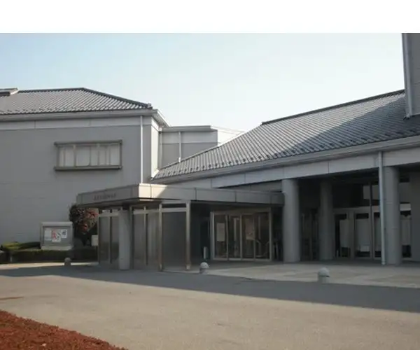
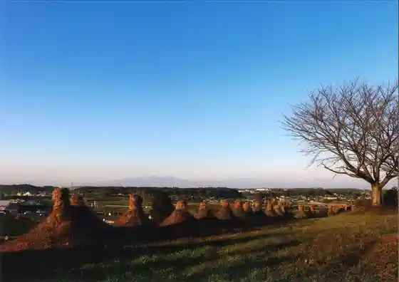
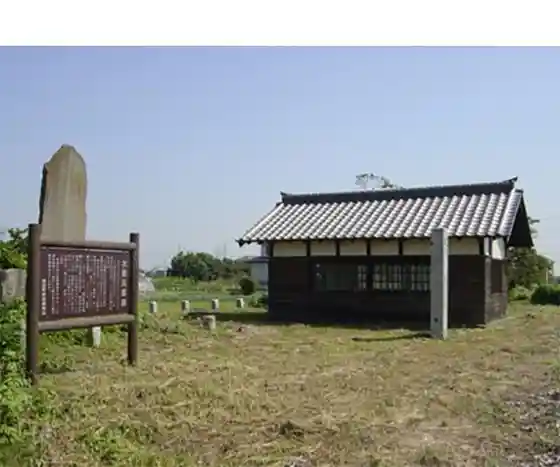
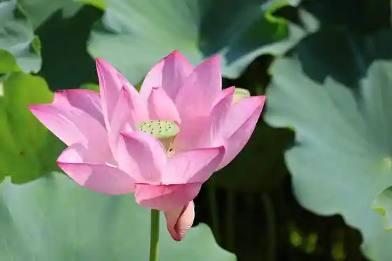

Japan / Saitama / Saitama-misato
Saitama-misato
Saitama-misato · Saitama
Saitama-misato
Highlighted on the Saitama map.

Sights
Mahigashi Tera (Shikoku Yasohachigatokoro Reijo O Suna Fumi no Dekiru Tera)
Inomata no Hyaku Hachi to (Kuni Shitei Juyo Mukei Minzoku Bunkazai)

Akigo no Hi
Rensho Do no Shidare Sakura

Akigo no Hi

Sarashi I (Ken Shitei Bunkazai)
Katakuri
Jujo Jori Iseki (Ken Shitei Bunkazai)
Saitama-misato Buruberii Tourist Farm
Inomata Kodaira Roku no Haka (Ken Shitei Bunkazai)
Inomata no Hyaku Hachi to (Kuni Shitei Juyo Mukei Minzoku Bunkazai)
Manyo Iseki Den Otomo Bu Makoto Ashi Onna Iseki (Ken Shitei Bunkazai)
Inomata no Hyaku Hachi to Tsuka
Iseki no Mori General Park
En Ryoden Tokusan Center
Rensho Do no Shidare Sakura
Mahigashi Tera (Shikoku Yasohachigatokoro Reijo O Suna Fumi no Dekiru Tera)